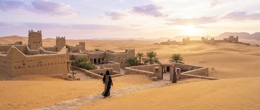
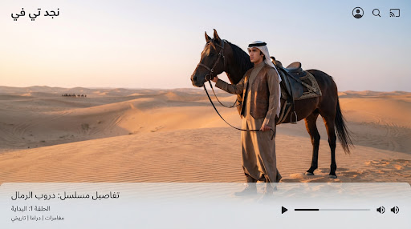
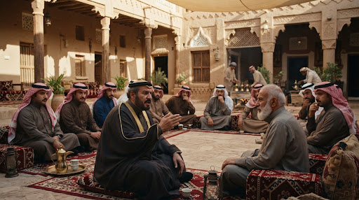
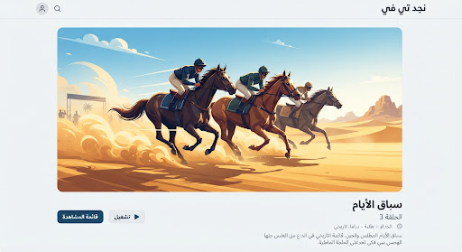
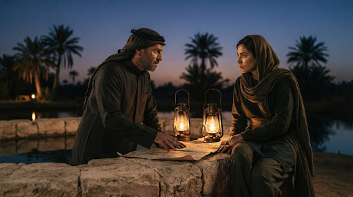
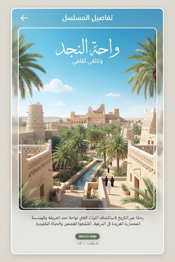
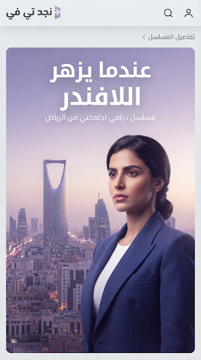
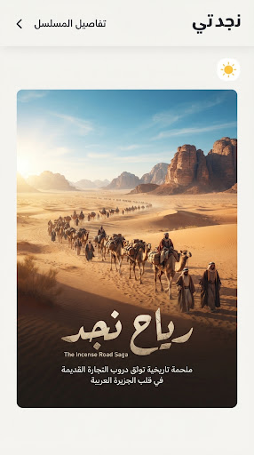
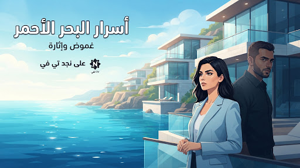

خيول الريح: ملحمة نجد
description قصة العمل
في خضم تحولات الجزيرة العربية مطلع القرن الماضي، تتشابك خيوط الشرف والفروسية مع صراع البقاء في قلب صحراء نجد القاسية. يتتبع العمل حكاية الفارس «حمد» وسعيه لحماية إرث قبيلته وأفراسها الأصيلة من مؤامرات التجارة والمطامع الإقليمية، وسط ملحمة بصرية باذخة تجمع بين عراقة التراث وجماليات الفن السينمائي المعاصر.
volume_up الصوت والترجمة
الحلقات
(12 حلقة في هذا الموسم)
نداء الصحراء
قيد المشاهدةيعود حمد إلى ديار والده بعد غياب طويل ليكتشف أن الخيل الأصيلة تواجه خطر المصادرة، فيتخذ قراره بمواجهة التحدي الكبير.

عقد الولاء
يجتمع كبار الوجهاء في قصر الإمارة لحسم مصير الوثائق القديمة، بينما يسابق حمد الزمن للوصول إلى الحقيقة الخفية.

سباق الرمال
انطلاق المهرجان السنوي يضع الجميع على المحك، ومنافس غير متوقع يهدد مسار السباق في الأمتار الأخيرة.

سر الواحة
اكتشاف خريطة أثرية تقود حمد إلى واحة غامضة في أعماق الدهناء تكشف أسراراً لم تكن في الحسبان.
أعمال قد تعجبك

وثائقيمسار الذهب الأبيض

أضواء العاصمة

تاريخيقوافل الحجاز

غموض